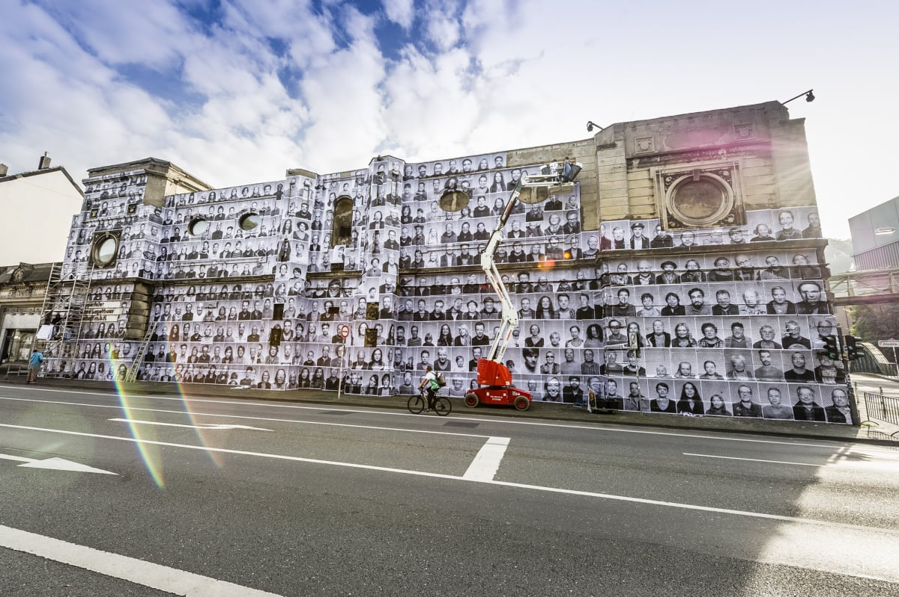

Reading Reflection #1
- 
I found JR's "Inside Out" art project to be a really unique and powerful combination of art and political statement. The project involves large-scale portraits or collections of portraits of people from various communities displayed in public spaces, which transforms urban landscapes into galleries of human stories and emotion. The idea behind the project is to give voice to those who often go unheard, and I also interpreted it as something of a challenge to the conventional way of thinking about art and its role in society.
One of the things that makes "Inside Out" so interesting as a project is the way it blurs the line between art and political statement. The portraits are not just art, but they also carry powerful messages about social justice, equality, and human rights. By placing these portraits in public spaces, JR is making a bold statement about the importance of giving voice to marginalized communities and challenging the status quo.
That being said, JR makes a point in the article to separate the art from the political, claiming it is not social or political but that he is glad it is changing perceptions about the people he photographs. To be honest, this confused me a bit as to me to change the image of a certain group of people(s) is a political pursuit, even if accomplished through artistic means.
Another aspect of "Inside Out" that makes it novel and impactful is the way it utilizes public spaces as galleries. This unconventional approach to displaying art creates a new way for people to interact with and experience art. The large-scale portraits demand attention and create a sense of community, as people come together to view the portraits and share their stories.
Overall, I found it an innovative and impactful project that challenges traditional perceptions of art and politics.